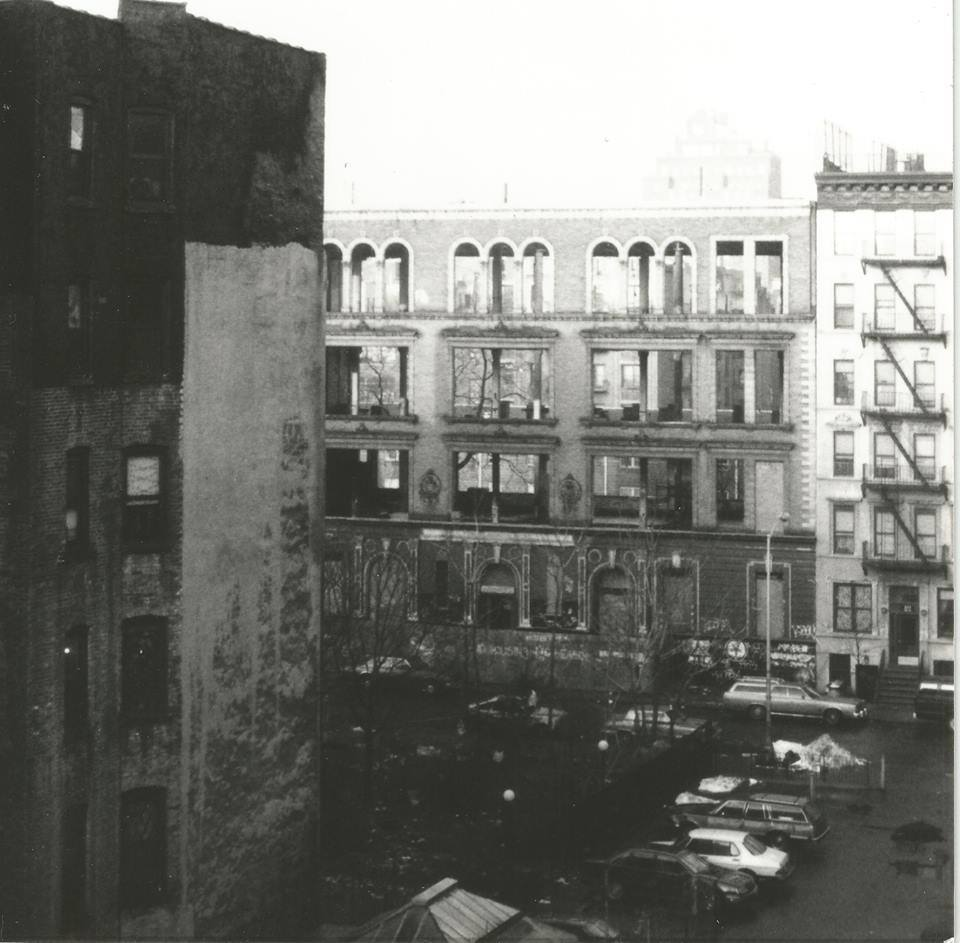
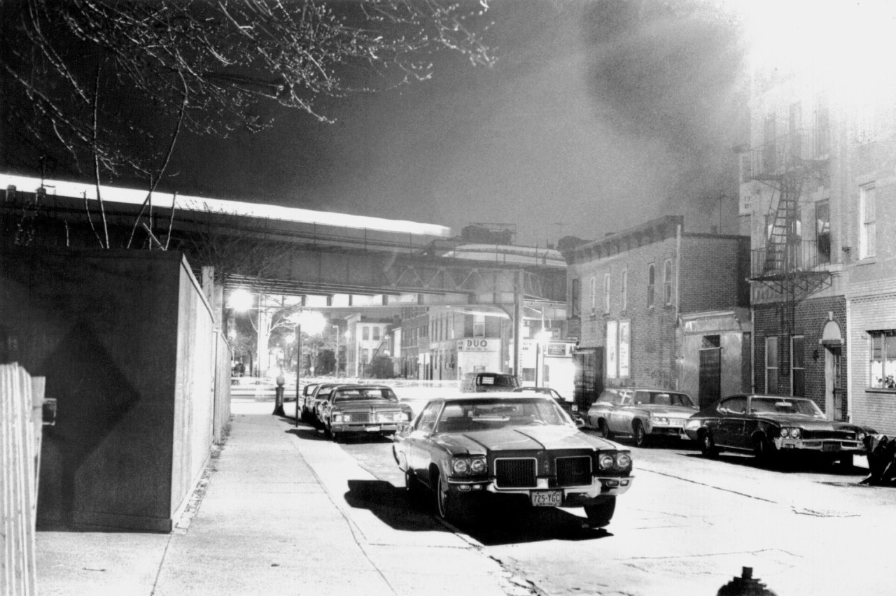
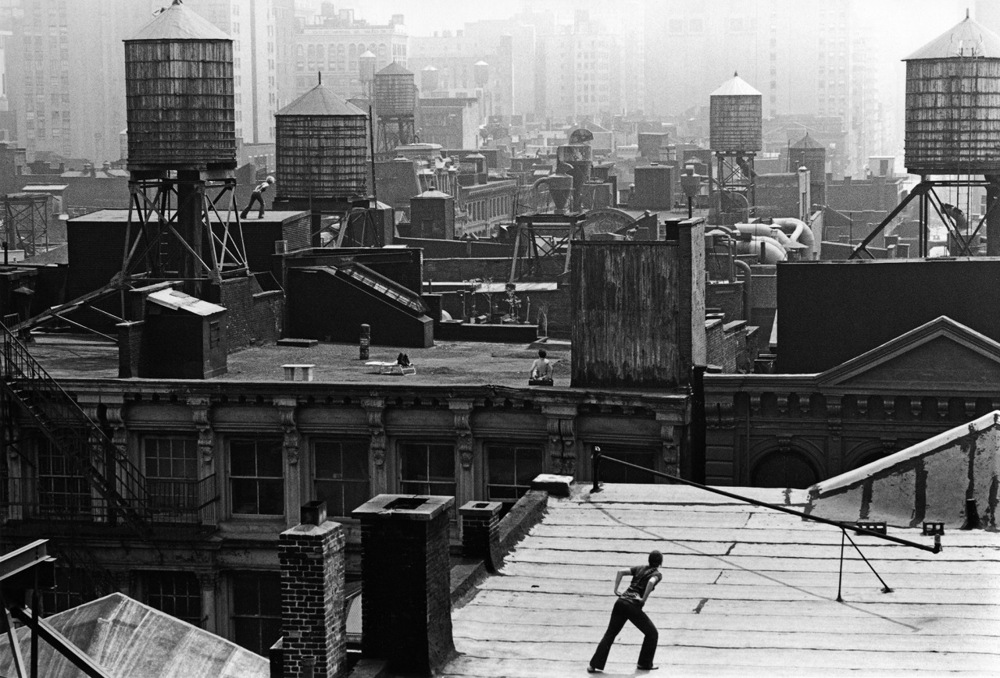
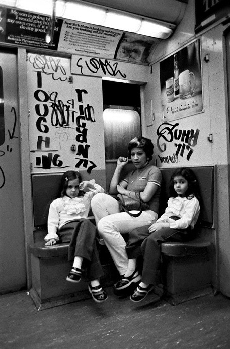

7th Ave facing North towards 47th Street, 1984
7th Ave facing North towards 47th Street, 1984
Beastie Boys, Washington Sq. Park, New York City
Circa 1986
Glen E. Friedman

Looking South to East 3rd St between Avenues B and C, 1987

George and Lennie in Brooklyn, 1976
1st and 1st, 1972

The great garbage strike of 1981. Broadway and 8th Street.

Bus dropping off bored kids to sit on the Circle Line and get more bored. 1979.

57th Street in Boro Park, Brooklyn, 1975

1980


1st Ave and 43rd St, 1980

What the hell was he just doing???

Trisha Brown, Roof Piece, 53 Wooster St. to 381 Lafayette St., New York City, 1973 — Photograph by Babette Mangolte

Wonderful photo by William Gale Gedney of two women talking on the sidewalk, mid-to-late 1960s. Real New York. Although the info is scant, I imagine this shot was taken in Gedney’s neighborhood when he lived in Brooklyn in the late 60s and was able to photograph the elevated tracks outside his Myrtle Avenue window. I’d expect this shot to be somewhere nearby. Link to the Gedney collection at the Duke University Libraries website posted yesterday
1980 New Jersey. That is all.

Broadway and 80th, looking Southeast, 1985.

CultureHISTORY: New York Subway c. 1980s